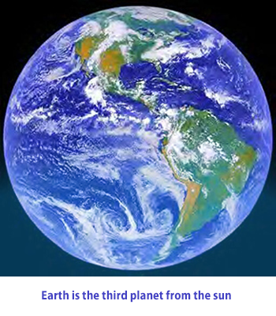

Earth is the only planet known to harbor life, and the “home” of human beings. From space Earth resembles a big blue marble with swirling white clouds floating above blue oceans. About 71 percent of Earth’s surface is covered by water, which is essential to life. The rest is land, mostly in the form of continents that rise above the oceans.
For thousands of years, human beings could only wonder about Earth and the other observable planets in the solar system. Many early ideas—for example, that the Earth was a sphere and that it traveled around the Sun—were based on brilliant reasoning. However, it was only with the development of the scientific method and scientific instruments, especially in the 18th and 19th centuries, that humans began to gather data that could be used to verify theories about Earth and the rest of the solar system. By studying fossils found in rock layers, for example, scientists realized that the Earth was much older than previously believed.
As a result of this recent space exploration, we now know that Earth is one of the most geologically active of all the planets and moons in the solar system. Earth is constantly changing. Over long periods of time land is built up and worn away, oceans are formed and re-formed, and continents move around, break up, and merge.

You are here on planet Earth